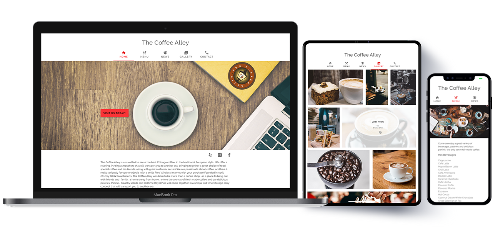
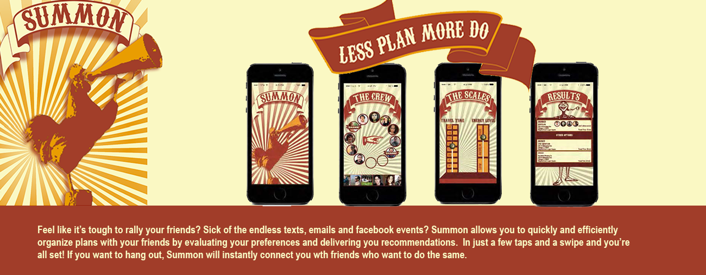
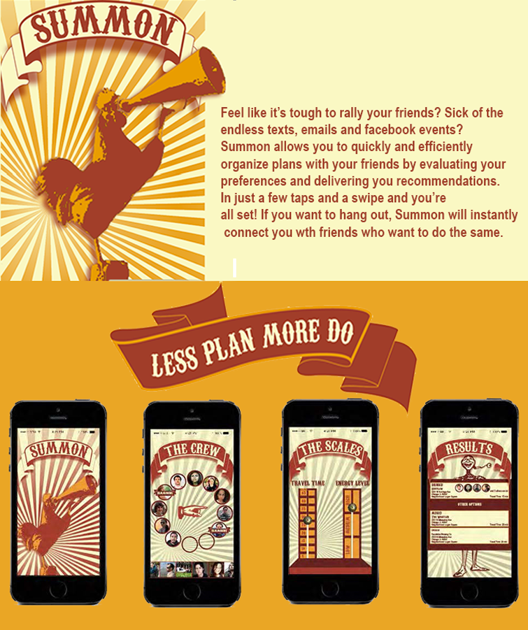
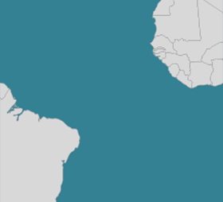
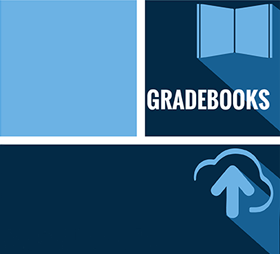
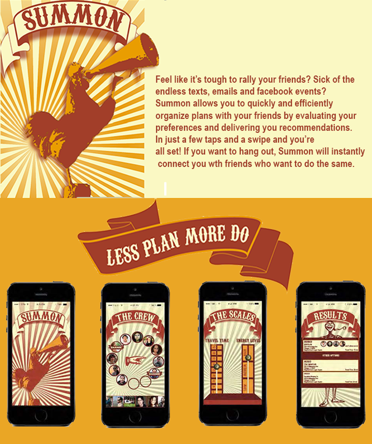
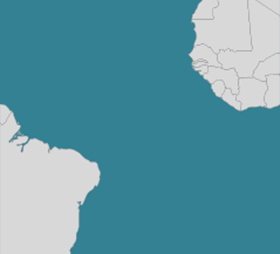
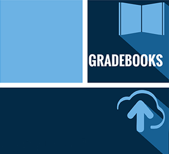

About Me
- I left Jamaica for Galesburg, IL to attend Knox College for a degree in Studio Art & Biology.
- Combining my love for Art and Biology into a career, I received a Master's in Landscape Architecture at Louisiana State University .
- I got my first job as a designer at Mia Lehrer + Associates, which allowed me to move to Los Angeles.
- When an opportunity at Hoerr Schaudt Landscape Architects became available, I moved to Chicago where I lived for 9 years.
- After 2008s recession as many colleagues faced layoffs, I began to consider making a pivot in my career.
- My goal was to find a fulfilling and secure career where I can be challenged to solve problems creatively.
- 2013 I took a leap of faith and joined Startup Institute's program for Product Design.
- I have been working as User Interface Designer since 2014, currently in beautiful Austin TX. The career transition was defintely worth it.
- Travel is a true passion mine. I've visted over 50 cities in North and South America, Europe and Africa. Hopefully I will get to visit Asia and Australia some day but I'm not to eager to visit the poles.
- I love watching movies and can usually guess most of the major Oscar winners correctly each year. This makes me very useful in an office pool.
- Another favorite is cooking. I really enjoy learning to prepare different cuisines and hosting dinner parties for family and friends. Jamaican food is of course my speciality.
Web

Local coffee shop responsive interface design for various devices.
Initial web design proposal for Department of Labor's Job Corps website.

Splash page and interface design for mobile application.
 Interface Designs for ClassroomIQ, an application which helps teachers grade papers faster and more efficiently.
Interface Designs for ClassroomIQ, an application which helps teachers grade papers faster and more efficiently.
Graphic
Logo design options for a telecommunications company.
Infographic documenting my wedding and honeymoon journey in 2015.
Landscape
Proposed landscape design for new building design by KPMB Architects and landscape by Hoerr Schaudt Landscape Architects.
Seasonal renderings for a Bradley University landscape design by Hoerr Schaudt Landscape Architects.
 Local coffee shop responsive interface design for various devices.
Initial web design proposal for Department of Labor's Job Corps website.
Local coffee shop responsive interface design for various devices.
Initial web design proposal for Department of Labor's Job Corps website.
 Proposed landscape design for new building design by KPMB Architects and landscape by Hoerr Schaudt Landscape Architects.
Proposed landscape design for new building design by KPMB Architects and landscape by Hoerr Schaudt Landscape Architects.
 Logo design options for a telecommunications company.
Logo design options for a telecommunications company.
 
Splash page and interface design for mobile application created a school project.

Infographic documenting my wedding and honeymoon journey in 2015.

Interface Designs for ClassroomIQ, an application which helps teachers grade papers faster and more efficiently.

Splash page and interface design for mobile application created a school project.

Infographic documenting my wedding and honeymoon journey in 2015.

Interface Designs for ClassroomIQ, an application which helps teachers grade papers faster and more efficiently.

{kind=link}
{kind=link}